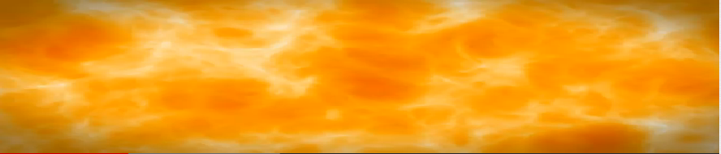

Universe creation in six Aeons
إِنَّ رَبَّكُمُ اللَّـهُ الَّذِي خَلَقَ السَّمَاوَاتِ وَالْأَرْضَ فِي سِتَّةِ أَيَّامٍ ثُمَّ اسْتَوَىٰ عَلَى الْعَرْشِ ۖيُدَبِّرُ الْأَمْرَ
Indeed, your Sustainer is God, who has created the heavens and the earth in six aeons, and is established on the throne of His almightiness, He plan & execute each phenomena.
Contents
Creation Stage and Smoke Stage
- Aeon 1 Space Creation and expansion
- Aeon 2 Plasma / Smoke Stage
Galaxies and stars Built in two aeon 42:12
- Aeon 3 Galaxies Formation through Quasars Mechanism
- Aeon 4 Stars Formation Gen III, Gen II and Gen I stars
Earth built in two aeons 41:9
- Aeon 5 Earth Elements Cooked inside Large Stars and thrown out when stars explode at the end of a star's life [Supernovae]
- Aeon 6 Construction of Earth at right distance from sun, Moon made, Water sent to earth
PRE-CREATION - Plan & Order
وَإِذَا قَضَىٰ أَمْرًا
When Allah SWT want to create whatever He wills, first thing is completion of His Plan and taking a decision
بَدِيعُ السَّمَاوَاتِ وَالْأَرْضِ ۖ وَإِذَا قَضَىٰ أَمْرًا فَإِنَّمَا يَقُولُ لَهُ كُن فَيَكُونُ ُ [2:117] God is the Originator of the heavens and the earth. Whenever He decides to do anything, He just commands it to exist and it comes into existence. (Time & space is part of creation)
قَالَ كَذَٰلِكِ اللَّـهُ يَخْلُقُ مَا يَشَاءُ ۚ إِذَا قَضَىٰ أَمْرًا فَإِنَّمَا يَقُولُ لَهُ كُن فَيَكُونُ
3:47 He said, "This is how Allah creates whatever He wills; when He wills a thing, He only says to it, 'Be' – and it happens immediately." قَضَى To complete or set aside a thing after its completion. When He completes أَمْرًا His plan, he say to it 'to be' and it is
Universe created with a purpose. Time have a start and and an end
مَّا خَلَقَ اللَّـهُ السَّمَاوَاتِ وَالْأَرْضَ وَمَا بَيْنَهُمَا إِلَّا بِالْحَقِّ وَأَجَلٍ مُّسَمًّى[30:8] God has not created the heavens and the earth and all that is between them but to produce positive and constructive results and for a set period
Science
Science has no clue about the pre-creation stage
Creation Stage and Smoke Stage
- Aeon 1 Space Creation and expansion
- Aeon 2 Plasma / Smoke Stage
AEON 1: Space construction, space inflation and matter; anti-matter creation
51:47-49
وَالسَّمَاءَ بَنَيْنَاهَا بِأَيْدٍ وَإِنَّا لَمُوسِعُونَ ﴿٤٧﴾ وَالْأَرْضَ فَرَشْنَاهَا فَنِعْمَ الْمَاهِدُونَ ﴿٤٨﴾ وَمِن كُلِّ شَيْءٍ خَلَقْنَا زَوْجَيْنِ لَعَلَّكُمْ تَذَكَّرُونَ
51:47-49] And We have built the heaven with hands, and it is We Who give the expanse.
And We made the earth a base, so how well do We lay out!
And We created all things in pairs, so that you may ponder (matter vs anti-matter, pairs in standard atomic models)
In verse 51:47 as per Quran, God constructed the space with his power and made a natural law to expand it. At start space inflated with a different law of nature. Now it is expanding with a power balance extremely fine tuned. Also please note that space expansion is uniform from every where and not just at edges. The space expansion is not limited by the speed of light because it is not a matter particle.
Space is like a membrane.
يَوْمَ نَطْوِي السَّمَاءَ كَطَيِّ السِّجِلِّ لِلْكُتُبِ ۚ كَمَا بَدَأْنَا أَوَّلَ خَلْقٍ نُّعِيدُهُ ۚ وَعْدًا عَلَيْنَا ۚ إِنَّا كُنَّا فَاعِلِينَ
[21:104] On that day We shall roll up the sky as a written scroll is rolled up. Then, as We initiated the first creation, We shall create a new universe. This is a Promise incumbent upon Us. Truly, We shall fulfill it.
Science
Space of this world is like a membrane made of continuum of space-time. Opposite of the space is nothingness. Space membrane provides an infrastructure where matter and energy can exist.
Matter is made of energy. Matter is like a frozen energy strings. Energy either makes the matter or changes the matter.
Matter can move in three ways; in space, in time or partially to both in time and in space. It is same as going towards North or East. If you go North side you do not go East. If you go East side, you do not go North. If you go in-between, you can go North East.
When photon moves with the speed of light, it moves in space. It does not move in time. So time is zero for Photon.
If a person is sitting at one place, the person is not moving in space. The person is only moving in the river of time. Time arrow is one way forward only. River of time is like in liquid form in the future that a person can change. As so soon as the time enters in past, the time river freezes. Now no one can change frozen river of time. (If time arrow change, we can see each second of our past frozen in time. (It will be discussed in length in a separate chapter of Parallel worlds or YOUM UL AKHARA)
Increase in gravity slows the time. Gravity creates weight. Gravity is pull of large body upon small body. Or inversely, push of curved space upon small body towards greater curve of large body like earth or sun. If a person is on earth or a clock is sent to sun, the time slows down then normal. At black-hole, where the space is highly curved, the time is so slow that everything thing look frozen to human eye at the event horizon of a black-hole.
Our Earth also creates a little curvature in the space, so, GPS satellites, at 26,600 KM from the centre of the earth; the time clocks are faster than the clocks on earth, and need hourly time adjustment with the clocks placed on earth.
'M' THEORY: Latest science theory is string theory which considers space as membrane. Scientific equations of string theory point out seven dimensions in addition to four dimensions of our universe i.e. left-right, up-down, fore-back and time. Similarly, out of four fundamental forces, gravity is the weakest and its string is loop shaped that can go into parallel membrane or parallel world. The parallel world could be centimetres away from us. As of now, scientist assume that force of gravity is weak because it bulge into the parallel world.
Space was created and expanded and is still expanding with the increased speed as the time pass . On the other hand, clusters of galaxies are not disintegrating (due to dark matter). We shall never see those galactic structures that are running away from us possibly with more than the speed of light due to expansion of space itself.
After the space was built, matter appeared in that space in the form of white hot smoke like plasma of the size of a solar system in a Nano second. Also within billionth of a second, all fundamental forces (MALAYAKA) appeared.
Book ref: The Grand Design by Steve Hawking, Brief History of Time by Steve Hawking, The Fabric of the Cosmos by Brian Greene. Parallel World by Michio Kaku
Extreme Fine Tuning of the Expanding Universe
Balance in cosmos, between matter attractive gravity vs. matter repulsive force (dark energy) is such that cosmos is expanding with more speed as the time passes.
If both are equal and the difference in the balance is zero, the universe will neither crunch nor expand. Measured value of dark energy is 120 powers of ten less than its natural value. If it was 10 119 rather than 10 120 the consequences would be lethal. If the balance in energy was slightly more positive, star would explode and human cannot form.
Steve Hawking writes in his book grand design chapter 'apparent miracle'
In 1998, observations of very distant supernova (exploding stars) revealed that the universe is expanding at an accelerated rate, an effect that is not possible without some kind of repulsive force acting thorough out space. Since we now know that its value is non-zero, the question remains that why does it have the value that it does. Physicist have created argument explaining how it might arise due to quantum mechanical effects, but the value they calculate is about 120 order of magnitude ( a 1 followed by 120 zeros) stronger than the actual value obtained through a supernova observation. That means that either the reasoning employed in the calculations was wrong or else some other effect exists that miraculously cancels all but a unimaginably tiny friction of the number calculated.
The one thing that is certain is that if the value the cosmological constant were much larger that what it is , our universe will have blown itself apart before galaxies could form – and once again – life as we know it would be impossible.
Three proofs of origin of the universe from nothing
1: Universe is expanding : It indicate that if the expansion is reversed, it end at at single point
Quran:
وَالسَّمَاءَ بَنَيْنَاهَا بِأَيْدٍ وَإِنَّا لَمُوسِعُونَ
- [51:47] And it is We who have built the universe with our hand [creative power ] and, behold We are steadily expanding it.
Science
- Surprising Discovery in 1998 (nobel prize 2011)
- Space is a fabric of space and time. The space is expanding with more speed as the time passes.
- and dark energy make 73%
- Dark matter 23% Observable only 4%
2: CMBR Discovered in 1946 : Gradual drop in temperature indicate that it was very high in the start
Cosmic Microwave Background Radiation – The live foot print that will vanish after few billion years
3: Abundance of Light Elements : Decrease in Hydrogen Quantity indicate there was a start and there is going to be an end
AEON 2: دُخَانٌ (SMOKE) - PLASMA
The universe at initial stage of first half a billion years was white like a smoke: دُخَانٌ
ثُمَّ اسْتَوَىٰ إِلَى السَّمَاءِ وَهِيَ دُخَانٌ فَقَالَ لَهَا وَلِلْأَرْضِ ائْتِيَا طَوْعًا أَوْ كَرْهًا قَالَتَا أَتَيْنَا طَائِعِينَ
[41:11] Then He directed Himself to the heaven while it was smoke and said to it and to the earth, "Come [into being], willingly or by compulsion." They said, "We have come willingly."
Science
377,000 Years from big bang
Universe is in the form of Foggy white hot plasma of electrons and protons in the photon–baryon fluid. Photon which are light particles, are not yet free. The plasma is opaque in nature.

SKIES SETUP IN TWO STAGES
41:12 فَقَضَاهُنَّ سَبْعَ سَمَاوَاتٍ فِي يَوْمَيْنِ وَأَوْحَىٰ فِي كُلِّ سَمَاءٍ أَمْرَهَا
[41:12] He then established them into seven heavens in two days, and to each heaven He sent the command of its affairs (natural laws related galaxies and stars embedded)
Galaxies and stars Built in two aeon 42:12
- Aeon 3 Galaxies Formation through Quasars Mechanism
- Aeon 4 Stars Formation Gen III, Gen II and Gen I stars
AEON 3 GALAXY FORMATIONS
Symmetrical condition of Plasma breaks, Light and darkness appeared. Plasma converts to gaseous clouds. Each clouds converts to galaxies. Quasars (Tariq) appears.
QURAN
Plasma turn transparent – split into gaseous clouds to become galaxies, stars, Planets
ثُمَّ اسْتَوَىٰ إِلَى السَّمَاءِ وَهِيَ دُخَانٌ فَقَالَ لَهَا وَلِلْأَرْضِ ائْتِيَا طَوْعًا أَوْ كَرْهًا قَالَتَا أَتَيْنَا طَائِعِينَ
41/11: Likewise, He it is who designed well the sky when it was smoke. He said to it and the earth, "come both of you willingly or perforce." They said, "we do come obedient".
Human think in the form of images built in mind. Quranic way is to explain a complicated phenomenon by building image which even a simplest human mind can understand. From millions of degree extremely hot plasma, in super homogenous condition, cosmos is further expanded; extreme symmetry breaks, plasma splits into clouds which are first step to the formation of galaxies and quasars (TARIQs).
وَالسَّمَاءَ رَفَعَهَا وَوَضَعَ الْمِيزَانَ 55:7 And heaven he raised up high in the space. He then gave them balance and equilibrium.
أَأَنتُمْ أَشَدُّ خَلْقًا أَمِ السَّمَاءُ ۚ بَنَاهَا 79/27: Are you a more difficult creation or is the heaven? Allah constructed it
وَأَغْطَشَ لَيْلَهَا وَأَخْرَجَ ضُحَاهَا 79/29 And He darkened its night and extracted its brightness (photon released from opaque plasma)
Photon freed from universe that was in condition of white plasma, light and darkness appeared.
Science
Structure formation: Formation of galaxies
Hydrogen and Helium Atoms formed, universe expanded, Atoms separated from super homogenous condition to form gas clouds, as the pre-requisite of galaxies formation. Universe expanded and cooled and became more transparent. Photons (light particles) are released. Light appeared.
Formation of Matter
370,000 years after the Big Bang, when temperature dropped to 3000 K, rapidly moving electron and positive charged nuclei slowed to form atoms of Hydrogen and Helium.
Light particles Photon were released. The universe became transparent as more and more electrons and protons combined to form hydrogen
Next Billion years
The space continued expanding along with the galaxies in gaseous form. The only gases available at that stage were Hydrogen and Helium.
Atoms will become coalesced in patches to form huge gaseous patches of galaxies. Quasars (TARIQ) were formed to provide spin to galaxies gases and to initiate make of huge primitive gaseous stars called population iii stars now extinct. Those stars were used to cook initial amount of light elements such as Lithium, Carbon etc.
AEON 4: - STAR FORMATION
Gases in Galaxies Coalesced to Form Huge Gas Stars and Quasars. With Balance & Equilibrium, the Stars Starting Circulation around Galaxies Centres
QURAN
Gases in the Galaxies coalesced to form primitive stars of Population III
رَفَعَ سَمْكَهَا فَسَوَّاهَا 79/28 He raised its ceiling and proportioned it. Allah created these huge bodies high up in space. He then gave them balance and equilibrium so that they would remain stable and continue on their path.
We can see galaxies and stars still in primitive stage as live photo today. They are too far too bright and provide great information.
فَلَا أُقْسِمُ بِمَوَاقِعِ النُّجُومِ ﴿٧٥﴾وَإِنَّهُ لَقَسَمٌ لَوْ تَعْلَمُونَ عَظِيمٌ ﴿٧٦
56/75 Nay, I provide evidence/affirmation by the locations of the stars. It is a great evidence if you have knowledge about it.
(for example quasars; the most bright stars are found five to ten billion light years away and provide information. It will be covered under separate page 'Evidence from TARIQ')
Rotation is everywhere in the sky
وَالسَّمَاءِ ذَاتِ الرَّجْعِ 86/11 As for the heavens; rotations is its inbuilt characteristic (New facets of heavenly bodies appear before us due to their continuous revolving state )
Science
About 13 billion years ago, inside gas clouds of Galaxies, homogeneity of matter was again broken. The matter, which was still in the form of Hydrogen or helium, started coalescing to make first generation of huge stars (pop III stars). A natural law appeared for setting of balance and equilibrium in the movements of stars to circulate around their axis and around the centre of galaxies. In the canter of galaxies, quasars with huge black-hole at center were formed, that provided necessary infrastructure to initiate primitive stars.
We can see Quasars (Tariq) even to today that provide us great knowledge about early and current universe in the form of live map.
Stars – Birth and Life
A star is born
Stars are formed in nebulas. As cloud of dust and gas collapse under gravity, they start to spin and become hot in the center, finally forming nuclear furnaces, this stage from the start of fusion to the state of equilibrium, is known as a stars main sequence.
Stars – The Life Span
- Our Sun like stars live for 13 billion years and end as White Dwarf
- Bigger stars the size of 100 suns live for one Billion Years and end as Neutron Star
- Large size stars the size of around 600 suns, live for only 10 Million Years end as Black hole
- Average Galaxy consist of two billion stars and one hundred thousand light years across
- There are trillions of galaxies, in many giant galaxy clusters in the universe
How the Stars End Up
Every single star is a hydrogen bomb which ends up in great explosion. On the average, one star explodes in each galaxy per 100 years. There are trillions of galaxies. So the scientist can possibly see almost every day an explosion somewhere in the sky. A the star reaches its middle age, it slowly uses up its fuel. The core begins to shrink, and the remaining hydrogen burns with a greater luminosity. When the sun expands to a red giant, it will engulf and destroy the inner planets.
Planetary Nebula
The dying star sheds its outer layers into space, illuminated by the remnants white dwarf in the centre. The expanding shells of matter recycle the stars bulk back into the galaxy, where it can be recycled to form new stars. Most stars end up as planetary nebulae
Small Size Stars – To White Dwarf
The star ends its life as an incredibly dense mass of carbon and oxygen at a fraction of its original size. Scientists predict that our sun will end up as small as Earth. Now out of fuel, this "white dwarf" will continue to cool. As it solidifies into pure carbon, white dwarf crystallizes into largest diamond in the universe.
Medium Size Stars - To Neutron Stars
The collapsed emanates of the stars core, a neutron stars is the smallest star and one of the densest known object in the universe, with the mass of the Sun squeezed into the mass of a city. Compressing all the humanity into a sugar cube would yield the same density as the neutron star, some of which spin hundreds of times per second
Massive Size Stars - To Black holes
When massive star explode, Black Holes is born. The densest object in the universe, with gravity is so strong that not even light can escape. At the centre is the 'singularity', where the mass of the dead star is compressed to a single point of almost zero size and infinite density.
Heavy Elements are cooked in giant stars – elements are Planet Components
Second generation stars which are called Population II stars, appear with metallic traces form the gas clouds first generation which are also called primitive Pop III stars.
Massive stars bigger than 400-800 suns are natural furnaces to cook elements used in the formation of earth like planets
Our sun, with diameter of 1,392,000 km is small sun with an active life span of 10 billion years. Bigger the star, more hydrogen burn to maintain the large size, shorts the life such as less than one billion years. Hydrogen converts into helium. Helium is heavy so it stay at core. Hydrogen ends, Helium starts burning producing carbon, nitrogen then oxygen until iron which have atomic number 27. Our sun, which is relatively small in size, will burn up until carbon. Note: Our earth diameter is just 12,756 km
EARTH MADE IN TWO STAGES 41:9
بِالَّذِي خَلَقَ الْأَرْضَ فِي يَوْمَيْنِ وَتَجْعَلُونَ لَهُ أَندَادًا
41/9. Ask them, "Do you indeed deny God; the One Who has created earth in two aeons, and ascribe equality to other entities besides Him.
Aeon 5 Earth Elements Cooked inside Large Stars and thrown out when stars explode at the end of a star's life [Supernovae]
Aeon 6 Construction of Earth at right distance from sun, Moon made, Water sent to earth
AEON 5 ELEMENT MADE IN STARS
There are huge stars, 5 to 10 times bigger in mass than our sun. When any one of them explodes at the end of its life, the explosion event, which is like firework in the sky, is called supernova. Before explosion supernova, earth elements up to atomic weight of iron are cooked. At event Supernova heavier than iron elements are cooked in few seconds. It include Gold, Lead, platinum, uranium etc. With the blast of explosion, earth elements shoot out and spread as the planetary cloud. Two jet of high speed gamma radiation, north pole and south pole shake the gas clouds around them and initiate whirlpool of solar system. Our earth was built at the proper distance from sun.
Quran - فَفَتَقْنَاهُمَا
One Mass Parted Asunder
21:30 أَنَّ السَّمَاوَاتِ وَالْأَرْضَ كَانَتَا رَتْقًا فَفَتَقْنَاهُمَا
[21:30] ARE, THEN, they who are bent on denying the truth not aware that the heavens and the earth were [once] one single mass, which We then parted asunder
When a massive star exhausts its hydrogen, it then fuses its helium into heavier elements. When this process reaches the element iron, fusion can no longer occurs and the star core collapses catastrophically, resulting in a titanic supernova explosion that can outshine an entire galaxy.
After the firework of Supernova above, elements and thrown in jets of radiation with the speed near light, that, with molecule clouds, make planetary nebula or planetary cloud. Elements are building blocks of earth, are formed in huge stars. Heavy elements formed at the time of explosion of the star – the phenomenon is called supernova فَفَتَقْنَاهُمَا part asunder] the great firework in the skies.
Science
Supernova Process - End of a Massive Star
arger Stars more massive than the Sun, burn though hydrogen fuel much more quickly, and the main part of the star's life last millions as opposed to billions of years for small stars. They are typically 400 to 800 times bigger in size than our Sun.
To maintain the size, hydrogen converts into helium. Helium is heavy so it stays at core. Hydrogen ends, Helium starts burning producing carbon, Nitrogen then oxygen etc.
When star at its inner core starts making iron. Iron absorbs energy. Giant star becomes unstable in shape. Within short period, when iron mass become millions of miles across, finally starts. Within 15 seconds, irons squeeze to less than 12 miles but weight remain the same. It is a birth of black hole. So much energy is released during final moments of star that it is equal to the energy our sun will produce in its whole life.
Our ingredients were made in Stars.
All heavier elements, heavier than iron, are made in the extreme condition of supernova process, within a very short period of time. Gold, Platinum, Uranium, lead etc. were made during the star explosion stage. At the same time, two jet of radiation stream out of supernova at near the speed of light. The radiation jet carry with them atomic and subatomic particles. Supernova, throw gases and metals in molecular form everywhere around it that form the planetary nebula, which is rich of heavy elements. These elements made in huge stars, eventually are used to make planets like earth, water and human bodies.
AEON 6 - EARTH CONSTRUCTION
The elements shoot out from supernova were trapped in the whirlpool of our solar-system-in-the-making. Earth was gradually constructed which is still revolving to give 12 months in a year.
Quran - And after that He made the earth shoot out 79:30 وَالْأَرْضَ بَعْدَ ذَٰلِكَ دَحَاهَا
79/30: (Earth and all the other celestial bodies were one mass). And after that He made the earth shoot out, and made it spread out egg shaped.
Earth and the Solar System
وَهُوَ الَّذِي خَلَقَ اللَّيْلَ وَالنَّهَارَ وَالشَّمْسَ وَالْقَمَرَ ۖ كُلٌّ فِي فَلَكٍ يَسْبَحُونَ ﴿٣٣
[21:33] and [fail to see that] it is He who has created the night and the day and the sun and the moon - all of them floating through space!
وَجَعَلْنَا فِي الْأَرْضِ رَوَاسِيَ أَن تَمِيدَ بِهِمْ 21/31: And We have made earth such that as it continuously revolves, people live on it undisturbed
وَفِي الْأَرْضِ آيَاتٌ لِّلْمُوقِنِينَ ﴿٢٠﴾ وَفِي أَنفُسِكُمْ ۚ أَفَلَا تُبْصِرُونَ 51/20-21 And on the earth are signs for those who have Faith with certainty, And also in your own selves. Do you not see?
الَّذِي جَعَلَ لَكُمُ الْأَرْضَ فِرَاشًا 2:22 He] who made for you the earth a bed [spread out]
إِنَّ فِي خَلْقِ السَّمَاوَاتِ وَالْأَرْضِ وَاخْتِلَافِ اللَّيْلِ وَالنَّهَارِ لَآيَاتٍ لِّأُولِي الْأَلْبَابِ
[3:190] Indeed, in the creation of the heavens and the earth and the alternation of the night and the day are signs for those of understanding.
وَلِلَّـهِ غَيْبُ السَّمَاوَاتِ وَالْأَرْضِ ۚ وَمَا أَمْرُ السَّاعَةِ إِلَّا كَلَمْحِ الْبَصَرِ أَوْ هُوَ أَقْرَبُ ۚ إِنَّ اللَّـهَ عَلَىٰ كُلِّ شَيْءٍ قَدِيرٌ
[16:77] And to Allah belongs the unseen [aspects] of the heavens and the earth. And the command for the Hour is not but as a glance of the eye or even nearer. Indeed, Allah is over all things competent.
سَابِقُوا إِلَىٰ مَغْفِرَةٍ مِّن رَّبِّكُمْ وَجَنَّةٍ عَرْضُهَا كَعَرْضِ السَّمَاءِ وَالْأَرْضِ أُعِدَّتْ لِلَّذِينَ آمَنُوا بِاللَّـهِ وَرُسُلِهِ ۚ ذَٰلِكَ فَضْلُ اللَّـهِ يُؤْتِيهِ مَن يَشَاءُ ۚ وَاللَّـهُ ذُو الْفَضْلِ الْعَظِيمِ
[57:21] Race toward forgiveness from your Lord and a Garden whose width is like the width of the heavens and earth, prepared for those who believed in Allah and His messengers. That is the bounty of Allah which He gives to whom He wills, and Allah is the possessor of great bounty.
وَاللَّـهُ جَعَلَ لَكُمُ الْأَرْضَ بِسَاطًا [71:19] And Allah has made for you the earth an expanse
Science
Shoot out from supernova, material of earth was trapped by our solar system in the making. Elements started accumulating In the whirlpool of solar system.
Sun ignited, most of the gases in the whirlpool around sun were repelled to outer layers of the whirlpool to make Jupiter and other planets. Heavier particles remained near the sun to accumulate and make the hard planets. Earth was made at an appropriate distance from the sun. The 93 million mile distance from the sun is called 'goldilocks zone', where water can remain liquid.
Artist depiction of earth and plants in the making
(Comments: In the light of Quran will be :
Throne is used for authority. Every living thing, plant or animals contain water and without water it dies. Wrote everything in the book means origin and safe placement of natural laws that run the heaven and the earth.